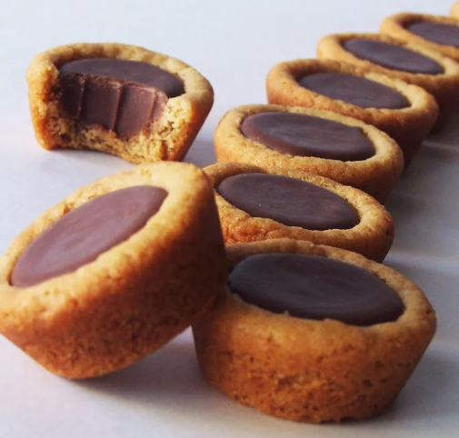

Special Occasion Fudge Puddles
Delicious litte treats for very special occasions! Thank you to honey :)

Equiptment:
- Mini Muffin Tin
- Melon Baller
Ingredients:
- ½ cup butter, softened
- ½ cup creamy peanut butter
- ½ cup white sugar
- ½ cup packed brown sugar
- 1 egg
- ½ teaspoon vanilla extract
- 1 ¼ cups all-purpose flou
- ¾ teaspoon baking soda
- ½ teaspoon salt
- 1 cup milk chocolate chips
- 1 cup semi-sweet chocolate chips
- 1 (14 ounce) can sweetened condensed milk
- 1 teaspoon vanilla extract
- ¾ cup pecan halves
Instructions:
- Preheat the oven to 325 degrees F (165 degrees C).
- Sift together flour, baking soda, and salt.
- Cream butter, peanut butter, and white and brown sugars. Mix in egg and 1/2 teaspoon vanilla. Stir flour mixture into creamed mixture. Shape the dough into 48 balls, 1-inch each. Place each ball in one compartment of a mini muffin tin.
- For the filling, put chocolate chips in a double boiler over simmering water. Stir in milk and vanilla, mix well.
- Bake in the preheated oven for 14 to 16 minutes or until lightly browned. Remove from oven and immediately make wells in the center of each using a melon baller. Cool in the pan for 5 minutes. Then carefully remove to wire racks. Using a measuring cup fill each shell with the chocolate mixture. Top with a pecan half.
Notes:
- These are so good. No notes!
Original Recipe
Go Back